Local-First Distributed Applications
Ragnar Mogk <mogk@cs.tu-darmstadt.de>
Software Technology Group at TU Darmstadt
Local-first applications are ubiquitous
Business applications
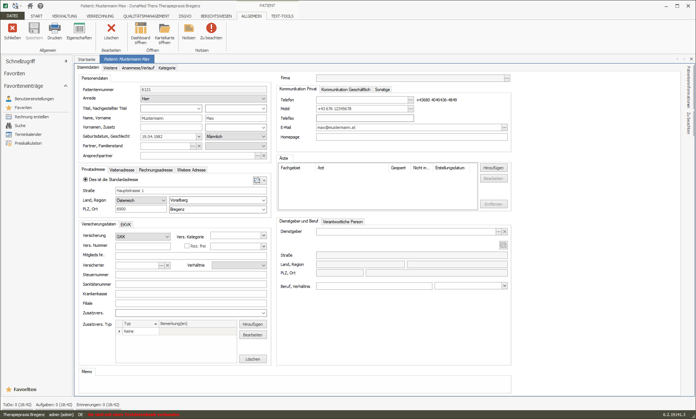Non-graphical interactive devices
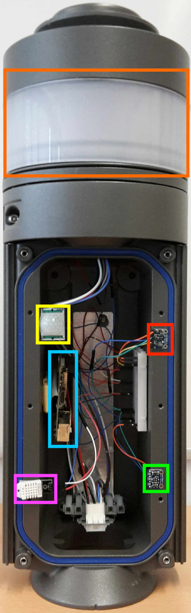Usage scenario
- local computation and data
- ad-hoc collaboration
Evolution of the platform
Mainframe model
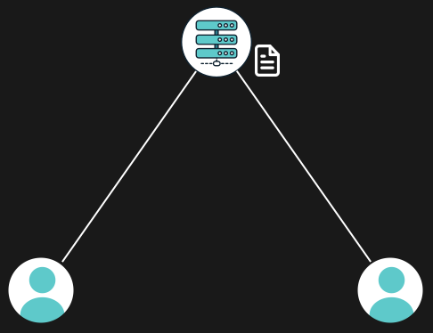Personal computers
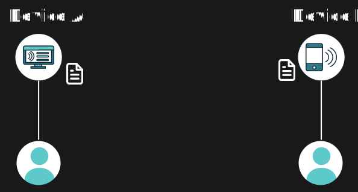Collaboration
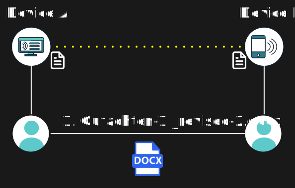Client-Server
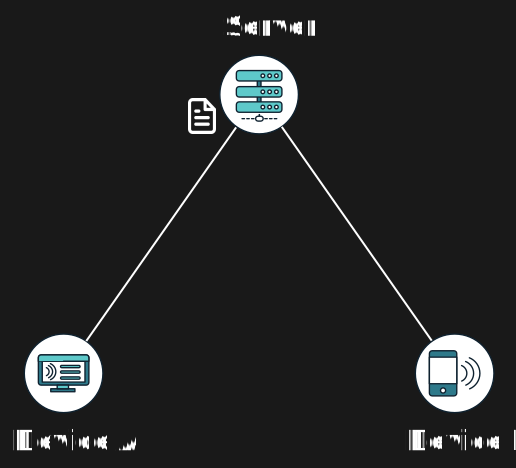Datacenter
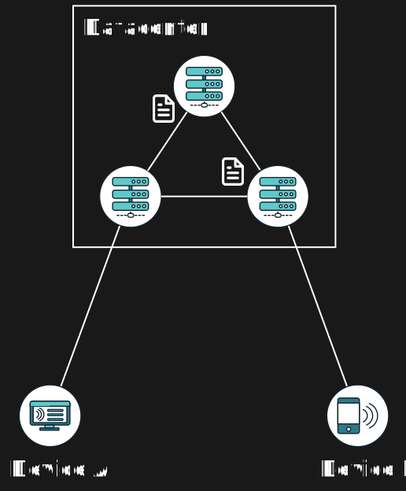Geo-distribution
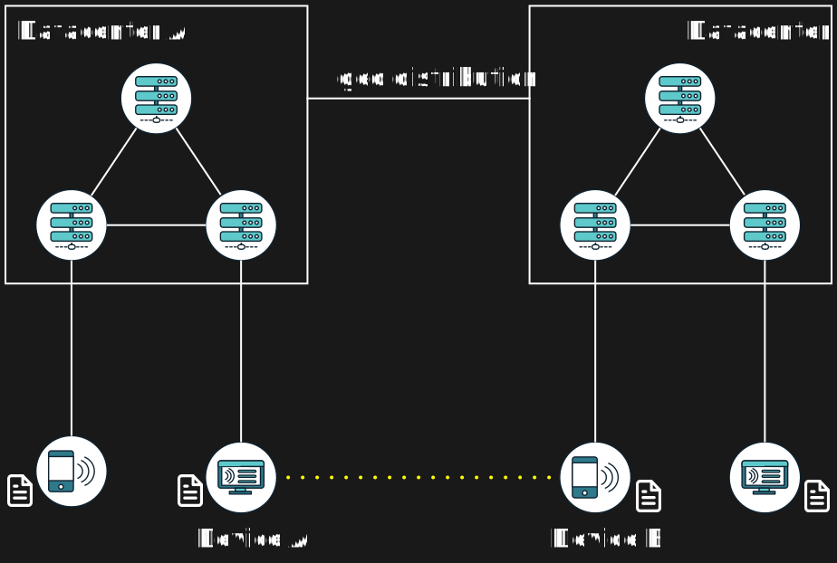Local-first
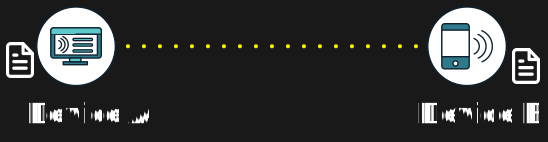Local-first
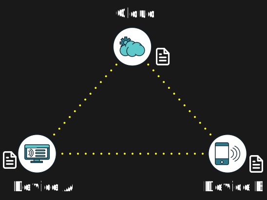Platform
- powerful & independent devices
- varied network connections
Developing local-first applications is hard
The use and platforms changed
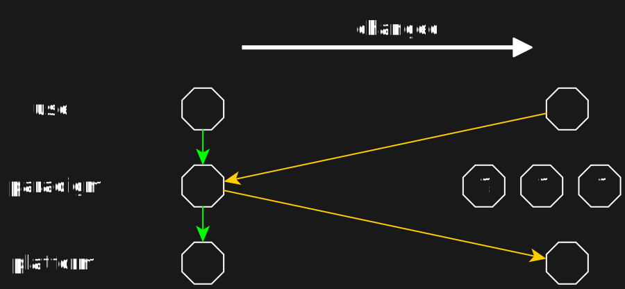
But the paradigm has not
What are the challenges?
Interactivity
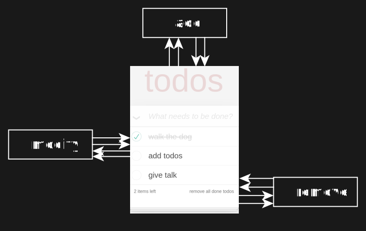Callback hell
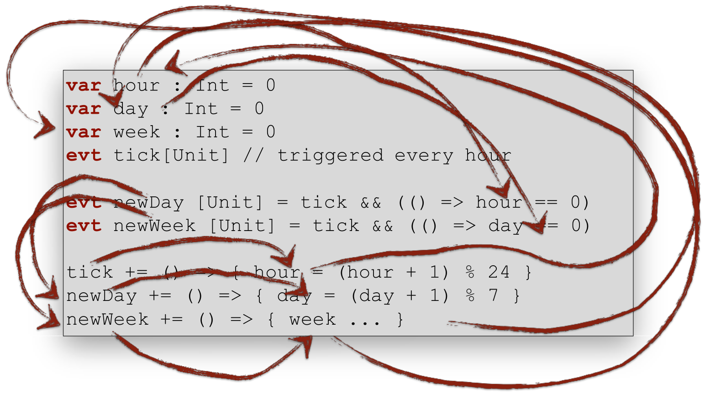Glitches
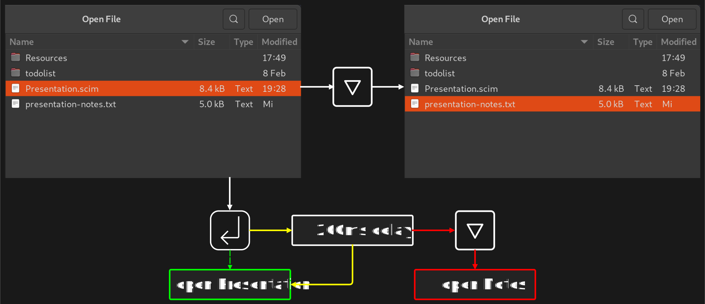Partial failure
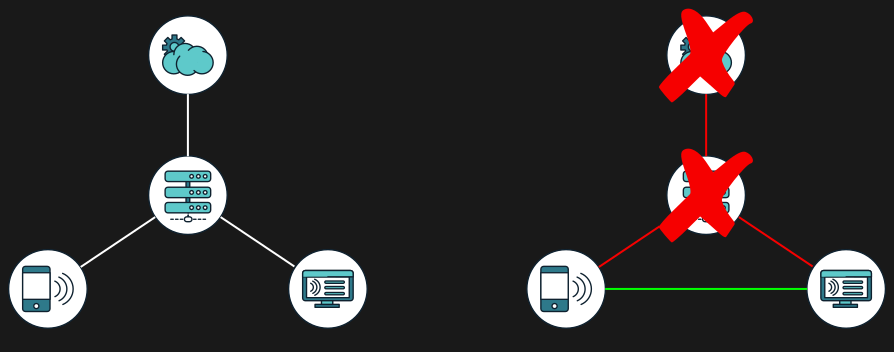Collaboration
What should a solution provide?
How to automate reliability?
REScala provides
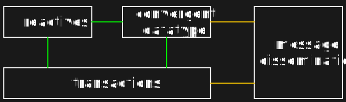Reactives
- time-changing value (state)
- computation (functions)
- depending on other reactives
val si: Signal[String] = Signals.fromInput(...)
val ei: Event [Int] = Events.fromCallback(...)
val e1: Event [F] = ei.map { i => f(si.value, i) }
val s1: Signal[Int] = e1.count
val s2: Signal[(String, Option[F])] = Signal { (s1.value, e1.value) }Graph representation
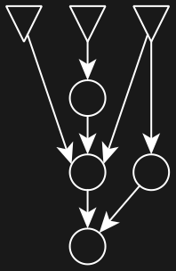Replicated values require a lattice instance
val tasksList: Signal[ReplicatedList[Taskref]] = ...
Network.replicate(tasksList, Todolist.registry)(Binding("tasklist"))
// the above needs a:
val replicatedListLattice: Lattice[ReplicatedList[Taskref]]trait Lattice[A]:
/** By assumption: associative, commutative, idempotent. */
def merge(left: A, right: A): ALattices
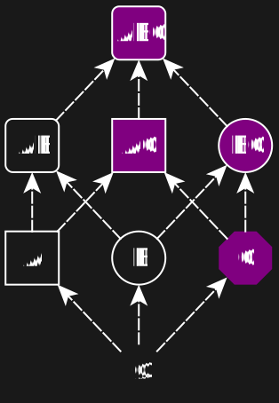merge(A, B) = merge(B, A) = merge(B, AB) = merge(AB, A) = …
Implementation of a ReplicatedList?
ReplicatedList is a composed type
type ReplicatedList =
(GList[Dot],
Map[Dot, RGANode[E]],
Set[Dot])Lattices compose
trait Lattice[A]:
/** By assumption: associative, commutative, idempotent. */
def merge(left: A, right: A): A
type ReplicatedList = (GList[Dot], Map[Dot, RGANode[E]], Set[Dot])
def setLattice[A]: Lattice[Set[A]] = (left, right) => left union right
def tripleLattice[A: Lattice, B: Lattice, C: Lattice]: Lattice[(A, B, C)] =
(left, right) =>
(left._1 merge right._1,
left._2 merge right._2,
left._3 merge right._3)
Operations are simple and sequential
def insert[A](base: ReplicatedList[A], index: Int, elem: A): ReplicatedList[A] = ...
def remove[A](base: ReplicatedList[A], index: Int) : ReplicatedList[A] = ...
Convergent replicated data types (CRDTs)
- state
- merge
- operations
How to combine reactives and replication?
How to combine reactives and replication?
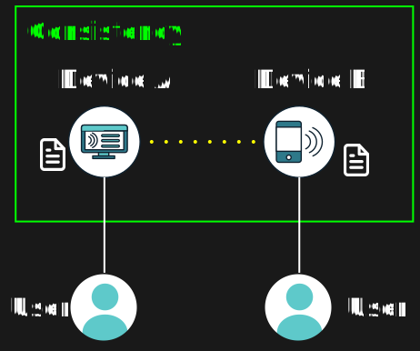The dataflow graph is a lattice.
State
val tasksList: Signal[ReplicatedList[Taskref]] = ...
val taskData : Signal[LastWriterWins[Taskdata]] = ...Transactions (operations)
Reactions that happen at the same time.
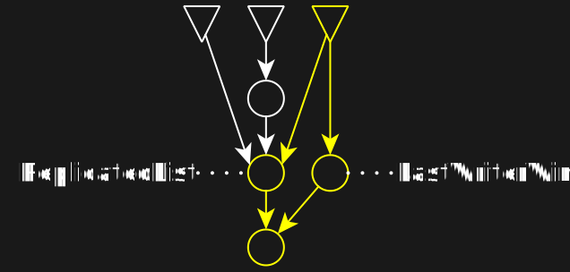Local execution model
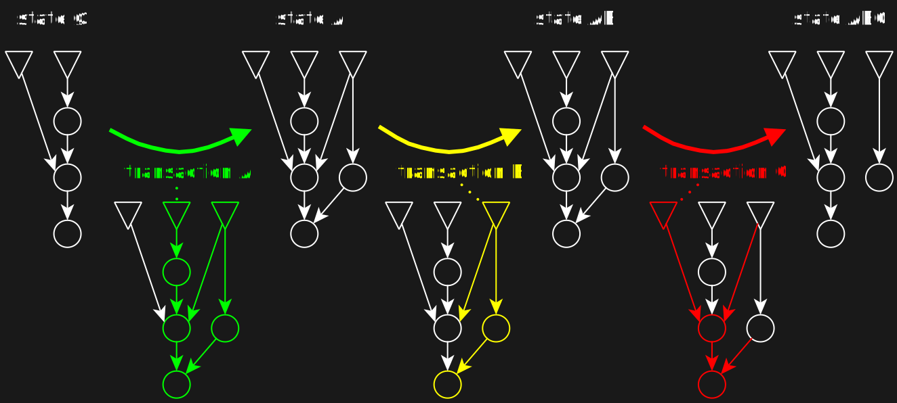How to merge transactions?
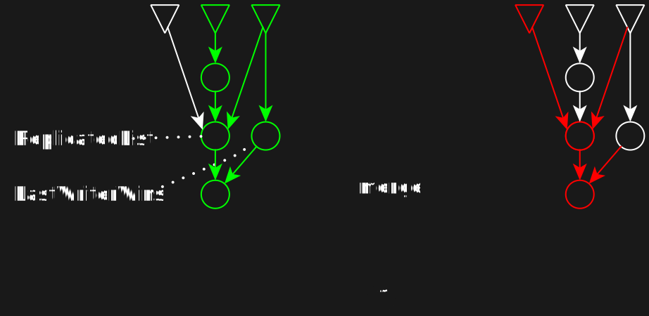How to merge transactions?
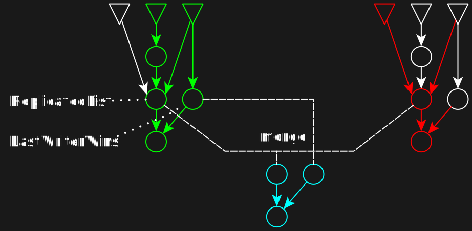Transactions
- determinism
- isolation (parallel execution)
- glitch freedom
- time travel
- exception / rollback semantics
Replication from the system side
Transparent encryption
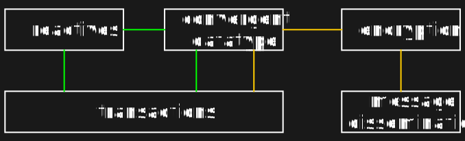Transparent encryption
type EnCRDT[S] = Set[AEAD[S, VectorClock]]
given [S]: Lattice[EnCRDT[S]] with
def merge(left: EnCRDT[S], right: EnCRDT[S]): EnCRDT[S] =
val combined = left union right
combined.filterNot(s => combined.exists(o => s.metadata < o.metadata))
extension [S](c: EnCRDT[S])
def send(data: S, key: Secret, replicaID: Defs.Id): EnCRDT[S] =
val causality = c.version.inc(replicaID)
Set(encrypt(data, causality, key))
def recombine(key: Secret)(using Lattice[S]): Option[S] =
c.flatMap(decrypt(_, key)).reduceOption(Lattice.merge[S])Is it fast?
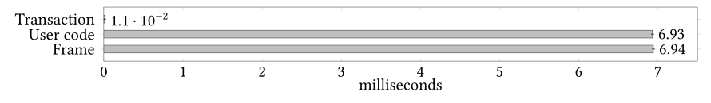For 100 reactives.
Is distribution fast?
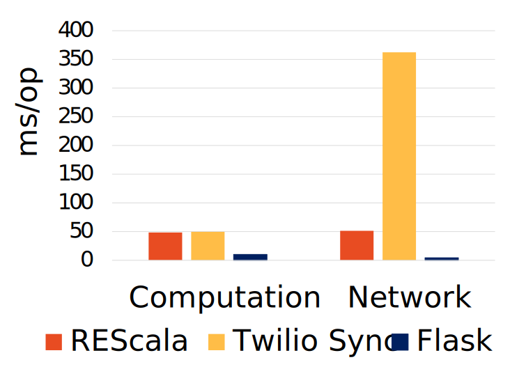Flask: no consistency; Twilio: centralized
Compilation
overhead is only an implementation detail
Reliable applications – a piece in the
data ownership puzzle
Data is a liability
- many companies do not know what much of their data is about
- storing data is expensive
- most useful data is private data
- securing private data is very expensive
Languages > providers
- providers
- centralized walled gardens
- stifle competition
- mediocre applications for interoperability
- languages
- data availability on users devices
- fosters competition and mutual enhancement
Find more at:
- REScala: https://www.rescala-lang.com
- Group: https://www.stg.tu-darmstadt.de
- Email: mogk@cs.tu-darmstadt.de
Web Vectors by Vecteezy
- https://2022.ecoop.org/home/plf-2022
- Submission deadline: April 1st
- 30min talks
- in-progress papers (+ talk)
val removeAll = Events.fromCallback[UIEvent](
cb => button("remove all done todos", onclick := cb))
val (createTodo: Event[String],
todoInputField: Input) = inputFieldHandler(todoInputTag, onchange)
val createTask: Event[Taskref] =
createTodo.map { str =>
maketask(TaskData(str)) }
val tasksList: Signal[List[Taskref]] =
Events.foldAll(List(exampleTasks)) { tasks => Seq(
createTask >>
{ tasks.prepend },
removeAll.event >>>
{ filterDone(tasks) },
tasks.value.map(_.removeClick) >>
{ t => tasks.filter(_.id != t) }
)}
UI.display(tasksList)